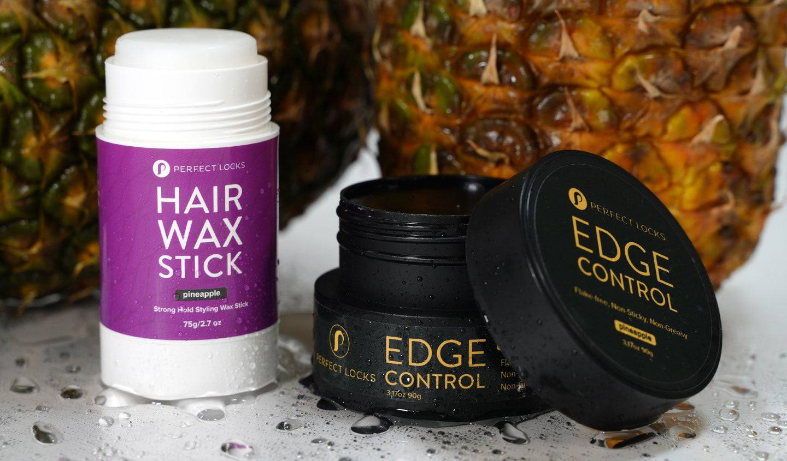

5 Essential Wig Care Tips for Long-Lasting Style and Confidence
Wigs are more than just a fashion accessory—they’re an investment in your confidence and style. Whether you wear wigs for convenience, medical reasons, or as a style statement, proper care is crucial to keeping them in excellent condition. Follow these five essential tips to maintain your wig’s longevity, appearance, and comfort.
1. Wash Your Wig Properly
Washing your wig is an essential part of wig care, but it’s crucial to do it correctly to prevent damage. Use a wig-friendly shampoo and lukewarm water to clean your wig without compromising the fibers. Avoid using regular shampoos, as they can strip the wig of its texture and shine.
Gently soak the wig in a basin of lukewarm water mixed with shampoo, then rinse thoroughly with clean water. Do not wring or twist the wig; instead, gently blot it with a towel. Allow the wig to air dry on a wig stand to maintain its shape.

2. Detangle Regularly
Tangles can cause significant damage to wig fibers over time. Use a wide-tooth comb or a wig brush to detangle your wig after each use. Start at the ends and work your way up to the roots, being gentle to avoid pulling or snapping the fibers.
For curly wigs, use your fingers or a specialized comb to maintain the curls without stretching or breaking them. Detangling your wig regularly not only keeps it looking neat but also prolongs its lifespan.
3. Store Your Wig Correctly
Proper storage is key to maintaining your wig’s shape and preventing damage. When not in use, place your wig on a wig stand to retain its style and avoid tangles. Avoid exposing it to direct sunlight, as UV rays can fade the color and weaken the fibers.
If you need to store your wig for an extended period, keep it in a silk bag or a protective case to prevent dust buildup. For travel, invest in a wig box to keep your wig safe and secure.

4. Avoid Heat Damage
Heat is one of the leading causes of damage to wigs, especially synthetic ones. If your wig is not labeled as heat-resistant, avoid using curling irons, straighteners, or blow dryers. For human hair wigs, always use a heat-protectant spray and set your tools to a low or medium heat setting.
If you want to style your synthetic wig, opt for rollers or other heat-free styling methods. Protect your wig from accidental exposure to heat sources like ovens, stovetops, or hot water.

5. Use Wig-Friendly Products
Not all hair products are suitable for wigs. Invest in wig-specific shampoos, conditioners, and styling products designed to protect and enhance the fibers. Avoid products that contain sulfates, alcohol, or heavy oils, as these can cause dryness and buildup.
Wig sprays and detanglers can add shine and softness, making your wig look brand new. Always follow the manufacturer’s care instructions to select the best products for your wig type.
Bonus Tip: Handle with Care
Treat your wig like the delicate item it is. Always wash your hands before handling your wig to avoid transferring oils or dirt. Use gentle motions when styling or brushing to prevent stress on the fibers.
Avoid wearing your wig while sleeping, as friction against the pillow can cause tangling and matting. If you must wear your wig overnight, consider a satin or silk pillowcase to reduce friction.
Take the first step towards flawless wig care. Download our FREE Wig Care Guide today!